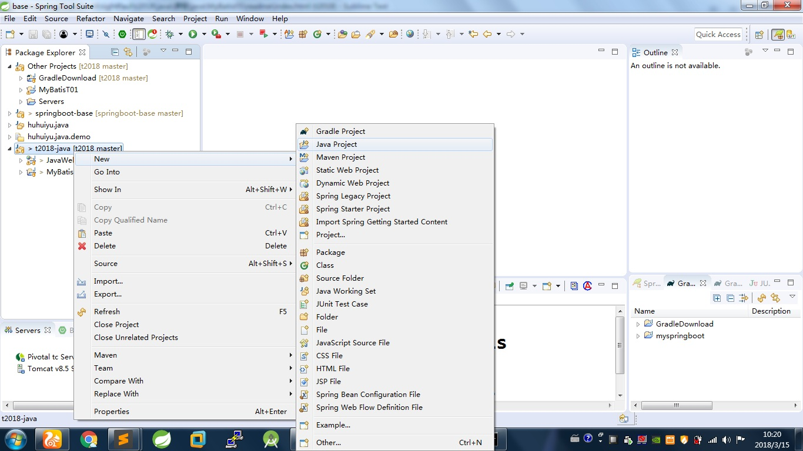
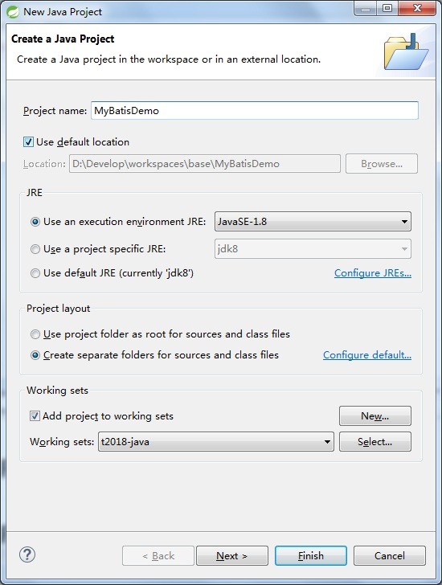
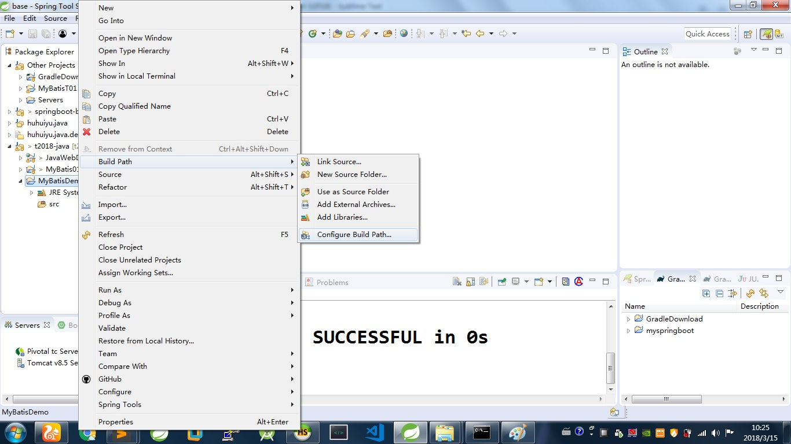
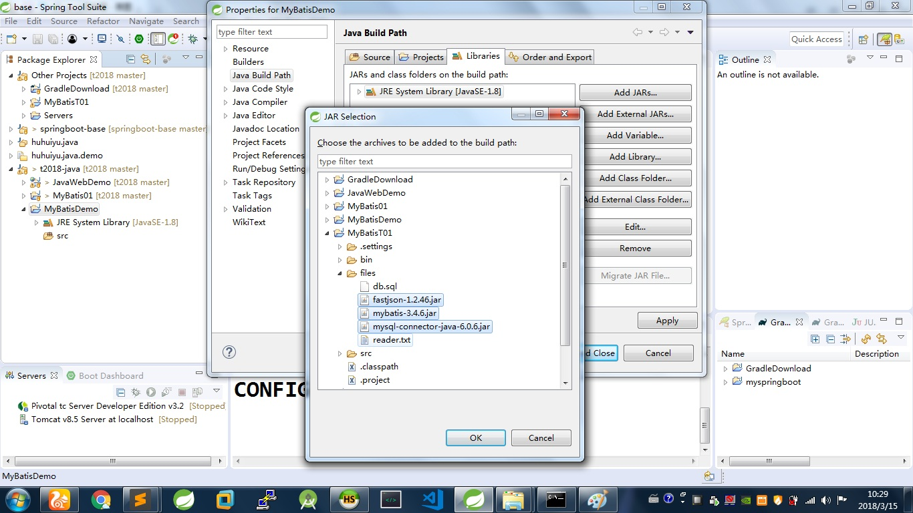
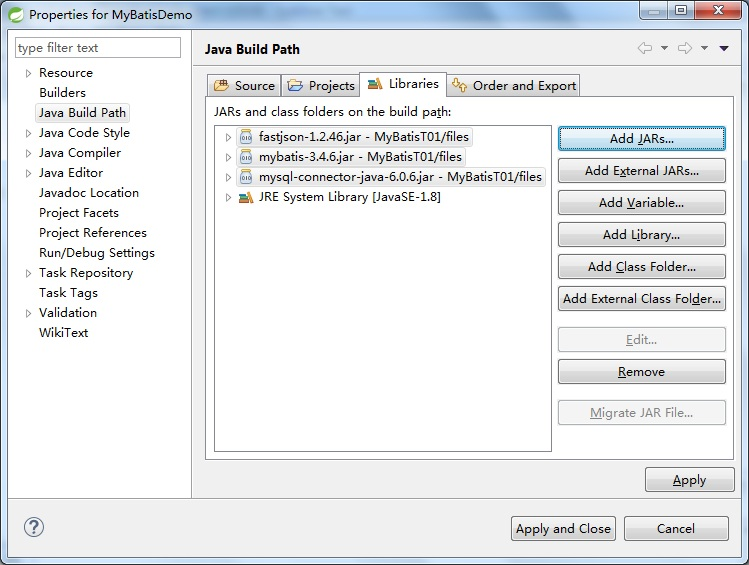
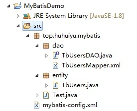

mybatis配置说明
新建java项目

输入项目名称后点击finish

右键点击项目,选择Build Path->Configure Build Path

如图,点击Add JARs...按钮后选择三个jar文件后点击ok

点击Apply and Close

目录结构和次序说明
- 创建实体类(entity)和数据库中的表一致
- mybatis的主配置文件mybatis-config.xml,里面是数据库连接配置和数据库操作文件(mapper)路径配置
- 创建数据库操作类(dao)和对应的mapper文件,mapper的id和dao里面的方法对应
- 创建测试类,用dao操作数据
